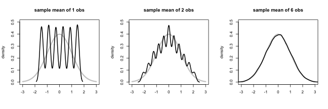
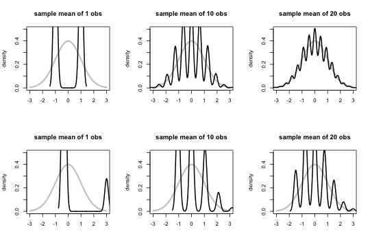

- Asymptotics is the term for the behavior of statistics as the sample size (or some other relevant quantity) limits to infinity (or some other relevant number)
- (Asymptopia is my name for the land of asymptotics, where everything works out well and there's no messes. The land of infinite data is nice that way.)
- Asymptotics are incredibly useful for simple statistical inference and approximations
- (Not covered in this class) Asymptotics often lead to nice understanding of procedures
- Asymptotics generally give no assurances about finite sample performance
- The kinds of asymptotics that do are orders of magnitude more difficult to work with
- Asymptotics form the basis for frequency interpretation of probabilities (the long run proportion of times an event occurs)
- To understand asymptotics, we need a very basic understanding of limits.
A trip to Asymptopia
Statistical Inference
Brian Caffo, Jeff Leek, Roger Peng
Johns Hopkins Bloomberg School of Public Health
Asymptotics
Numerical limits
Imagine a sequence
- \(a_1 = .9\),
- \(a_2 = .99\),
- \(a_3 = .999\), ...
Clearly this sequence converges to \(1\)
Definition of a limit: For any fixed distance we can find a point in the sequence so that the sequence is closer to the limit than that distance from that point on
Limits of random variables
- The problem is harder for random variables
Consider \(\bar X_n\) the sample average of the first \(n\) of a collection of \(iid\) observations
- Example \(\bar X_n\) could be the average of the result of \(n\) coin flips (i.e. the sample proportion of heads)
We say that \(\bar X_n\) converges in probability to a limit if for any fixed distance the probability of \(\bar X_n\) being closer (further away) than that distance from the limit converges to one (zero)
The Law of Large Numbers
- Establishing that a random sequence converges to a limit is hard
- Fortunately, we have a theorem that does all the work for us, called the Law of Large Numbers
- The law of large numbers states that if \(X_1,\ldots X_n\) are iid from a population with mean \(\mu\) and variance \(\sigma^2\) then \(\bar X_n\) converges in probability to \(\mu\)
- (There are many variations on the LLN; we are using a particularly lazy version, my favorite kind of version)
Law of large numbers in action
n <- 10000
means <- cumsum(rnorm(n))/(1:n)
plot(1:n, means, type = "l", lwd = 2, frame = FALSE, ylab = "cumulative means",
xlab = "sample size")
abline(h = 0)

Discussion
- An estimator is consistent if it converges to what you want to estimate
- Consistency is neither necessary nor sufficient for one estimator to be better than another
- Typically, good estimators are consistent; it's not too much to ask that if we go to the trouble of collecting an infinite amount of data that we get the right answer
- The LLN basically states that the sample mean is consistent
- The sample variance and the sample standard deviation are consistent as well
- Recall also that the sample mean and the sample variance are unbiased as well
- (The sample standard deviation is biased, by the way)
The Central Limit Theorem
- The Central Limit Theorem (CLT) is one of the most important theorems in statistics
- For our purposes, the CLT states that the distribution of averages of iid variables, properly normalized, becomes that of a standard normal as the sample size increases
- The CLT applies in an endless variety of settings
- Let \(X_1,\ldots,X_n\) be a collection of iid random variables with mean \(\mu\) and variance \(\sigma^2\)
- Let \(\bar X_n\) be their sample average
- Then \(\frac{\bar X_n - \mu}{\sigma / \sqrt{n}}\) has a distribution like that of a standard normal for large \(n\).
- Remember the form \[\frac{\bar X_n - \mu}{\sigma / \sqrt{n}} = \frac{\mbox{Estimate} - \mbox{Mean of estimate}}{\mbox{Std. Err. of estimate}}. \]
- Usually, replacing the standard error by its estimated value doesn't change the CLT
Example
- Simulate a standard normal random variable by rolling \(n\) (six sided)
- Let \(X_i\) be the outcome for die \(i\)
- Then note that \(\mu = E[X_i] = 3.5\)
- \(Var(X_i) = 2.92\)
- SE \(\sqrt{2.92 / n} = 1.71 / \sqrt{n}\)
- Standardized mean \[ \frac{\bar X_n - 3.5}{1.71/\sqrt{n}} \]
Simulation of mean of \(n\) dice

Coin CLT
- Let \(X_i\) be the \(0\) or \(1\) result of the \(i^{th}\) flip of a possibly unfair coin
- The sample proportion, say \(\hat p\), is the average of the coin flips
- \(E[X_i] = p\) and \(Var(X_i) = p(1-p)\)
- Standard error of the mean is \(\sqrt{p(1-p)/n}\)
- Then \[ \frac{\hat p - p}{\sqrt{p(1-p)/n}} \] will be approximately normally distributed

CLT in practice
- In practice the CLT is mostly useful as an approximation \[ P\left( \frac{\bar X_n - \mu}{\sigma / \sqrt{n}} \leq z \right) \approx \Phi(z). \]
- Recall \(1.96\) is a good approximation to the \(.975^{th}\) quantile of the standard normal
- Consider \[ \begin{eqnarray*} .95 & \approx & P\left( -1.96 \leq \frac{\bar X_n - \mu}{\sigma / \sqrt{n}} \leq 1.96 \right)\\ \\ & = & P\left(\bar X_n +1.96 \sigma/\sqrt{n} \geq \mu \geq \bar X_n - 1.96\sigma/\sqrt{n} \right),\\ \end{eqnarray*} \]
Confidence intervals
- Therefore, according to the CLT, the probability that the random interval \[\bar X_n \pm z_{1-\alpha/2}\sigma / \sqrt{n}\] contains \(\mu\) is approximately 100\((1-\alpha)\)%, where \(z_{1-\alpha/2}\) is the \(1-\alpha/2\) quantile of the standard normal distribution
- This is called a \(100(1 - \alpha)\)% confidence interval for \(\mu\)
- We can replace the unknown \(\sigma\) with \(s\)
Give a confidence interval for the average height of sons
in Galton's data
library(UsingR)
data(father.son)
x <- father.son$sheight
(mean(x) + c(-1, 1) * qnorm(0.975) * sd(x)/sqrt(length(x)))/12
## [1] 5.710 5.738
Sample proportions
- In the event that each \(X_i\) is \(0\) or \(1\) with common success probability \(p\) then \(\sigma^2 = p(1 - p)\)
- The interval takes the form \[ \hat p \pm z_{1 - \alpha/2} \sqrt{\frac{p(1 - p)}{n}} \]
- Replacing \(p\) by \(\hat p\) in the standard error results in what is called a Wald confidence interval for \(p\)
- Also note that \(p(1-p) \leq 1/4\) for \(0 \leq p \leq 1\)
- Let \(\alpha = .05\) so that \(z_{1 -\alpha/2} = 1.96 \approx 2\) then \[ 2 \sqrt{\frac{p(1 - p)}{n}} \leq 2 \sqrt{\frac{1}{4n}} = \frac{1}{\sqrt{n}} \]
- Therefore \(\hat p \pm \frac{1}{\sqrt{n}}\) is a quick CI estimate for \(p\)
Example
- Your campaign advisor told you that in a random sample of 100 likely voters,
56 intent to vote for you.
- Can you relax? Do you have this race in the bag?
- Without access to a computer or calculator, how precise is this estimate?
1/sqrt(100)=.1so a back of the envelope calculation gives an approximate 95% interval of(0.46, 0.66)- Not enough for you to relax, better go do more campaigning!
- Rough guidelines, 100 for 1 decimal place, 10,000 for 2, 1,000,000 for 3.
round(1/sqrt(10^(1:6)), 3)
## [1] 0.316 0.100 0.032 0.010 0.003 0.001
Poisson interval
- A nuclear pump failed 5 times out of 94.32 days, give a 95% confidence interval for the failure rate per day?
- \(X \sim Poisson(\lambda t)\).
- Estimate \(\hat \lambda = X/t\)
- \(Var(\hat \lambda) = \lambda / t\) \[ \frac{\hat \lambda - \lambda}{\sqrt{\hat \lambda / t}} = \frac{X - t \lambda}{\sqrt{X}} \rightarrow N(0,1) \]
- This isn't the best interval.
- There are better asymptotic intervals.
- You can get an exact CI in this case.
R code
x <- 5
t <- 94.32
lambda <- x/t
round(lambda + c(-1, 1) * qnorm(0.975) * sqrt(lambda/t), 3)
## [1] 0.007 0.099
poisson.test(x, T = 94.32)$conf
## [1] 0.01721 0.12371
## attr(,"conf.level")
## [1] 0.95
In the regression class
exp(confint(glm(x ~ 1 + offset(log(t)), family = poisson(link = log))))
## Waiting for profiling to be done...
## 2.5 % 97.5 %
## 0.01901 0.11393